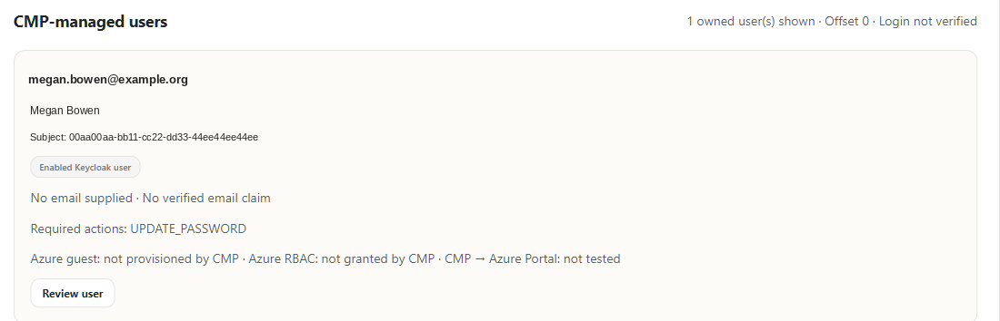
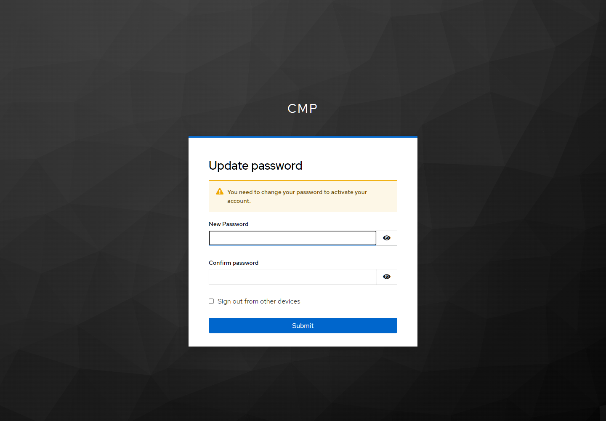

Guide 6 of 9
G6 · Manage Keycloak users and their lifecycle
Create and govern Keycloak-native users through a least-privilege service client, with first-login password change and no silent coupling to Entra or Azure.
Outcome#
Keycloak-native users with their own passwords (never copied from Entra), a forced password change at first login, an honest email posture, and a least-privilege administration path from CMP.
User model#
| Property | Value | Why |
|---|---|---|
| Credential | Temporary password | The user sets a new password at first login (UPDATE_PASSWORD). |
| Optional; unverified if supplied | A username that looks like an email proves nothing; SMTP is not configured, so verification emails are refused (HTTP 412) instead of pretending. | |
| Ownership marker | cmpUserManaged = cmp-user-admin-v1 + operation ID | CMP only manages users it created; existing users are never adopted by email. |
| Entra relationship | None automatic | A Keycloak user becomes an Azure user only through G5 (guest + RBAC). |
Create, enable/disable, reset, revoke — exactly four Admin REST shapes
async create(profile, password, operationId) {
await this.request('POST', '', {
...profile, enabled: true, emailVerified: false,
attributes: { cmpUserManaged: [USER_OWNER], cmpUserOperationId: [operationId] },
requiredActions: ['UPDATE_PASSWORD', ...(profile.email ? ['VERIFY_EMAIL'] : [])],
credentials: [{ type: 'password', temporary: true, value: password }]
});
const found = await this.search({ username: profile.username, exact: 'true' });
if (found.length !== 1 || found[0]?.attributes?.cmpUserOperationId?.[0] !== operationId) {
serviceError('Created user subject and operation ownership could not be confirmed');
}
return this.get(this.normalize(found[0]).subject);
}
async enabled(subject, enabled) { await this.request('PUT', `/${subject}`, { enabled }); }
async reset(subject, password) { await this.request('PUT', `/${subject}/reset-password`, { type: 'password', temporary: true, value: password }); }
async logout(subject) { await this.request('POST', `/${subject}/logout`); }
async verifyEmail(subject) { await this.request('PUT', `/${subject}/execute-actions-email`, ['VERIFY_EMAIL']); }
Administration path#
- The CMP admin backend calls a private HTTPS listener on port 8443 on the Keycloak VM; the subnet NSG admits it only from the Container Apps subnet; public
/adminstays 404. - A dedicated service client
cmp-user-adminuses client credentials; its token must carry onlyquery-users,view-users,manage-users(and optionallyquery-groups) or the call is refused. - Mutations require platform-admin authentication, CSRF and a reviewed plan; unknown or partial outcomes are journaled and never retried blindly.
Commissioning sequence
.\scripts\configure-sso-user-admin.ps1 -Phase Preview -IncludeSubnetNsg
.\scripts\configure-sso-user-admin.ps1 -Phase Plan -IncludeSubnetNsg
.\scripts\configure-sso-user-admin.ps1 -Phase Apply -IncludeSubnetNsg -AllowCaddyRestart
.\scripts\configure-sso-user-admin.ps1 -Phase Verify -IncludeSubnetNsg
.\scripts\deploy-sso-admin.ps1 -Phase Apply -RebuildApplication -EnableUserAdmin
.\scripts\deploy-sso-admin.ps1 -Phase Verify -EnableUserAdmin
The Caddy-only restart is an explicit opt-in; Keycloak, PostgreSQL and the VM are not restarted.
Evidence#


UPDATE_PASSWORD pending, no email claim, and explicitly no Azure guest or RBAC.

From CMP user to Azure guest
This user can sign in to CMP (Trust A) but cannot become an Entra guest through Trust B until it has an email attribute that Keycloak can release as the emailaddress claim. Decide how Contoso proves mailbox ownership before you populate it — Keycloak's realm requires genuine verification.